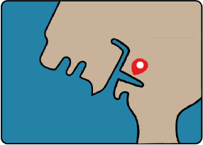

Verhaal Schoonschip
Schoonschip is een woonwijk op het water. Deze drijvende woonwijk ligt in Amsterdam-Noord. Het initiatief is volledig te danken aan de bewoners zelf. Achter elk onderdeel van schoonschip zit een diepere gedacht.